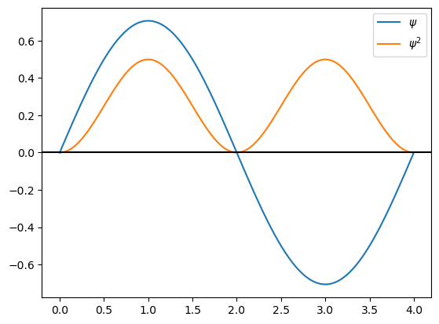
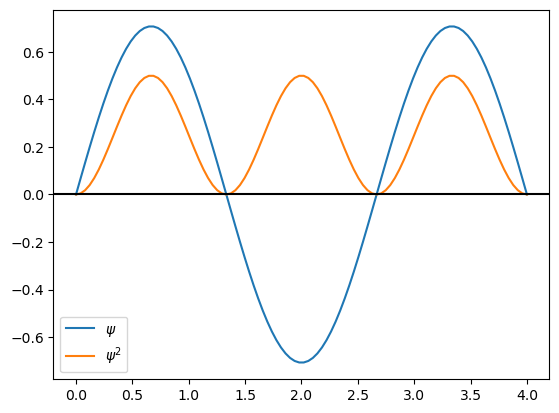
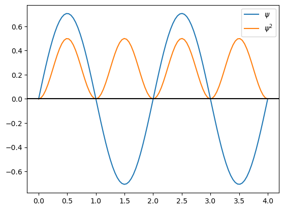
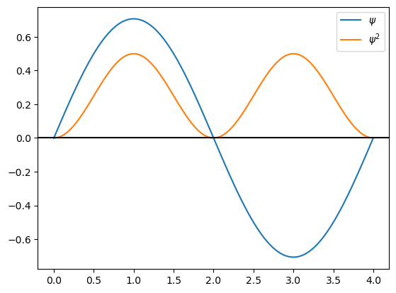
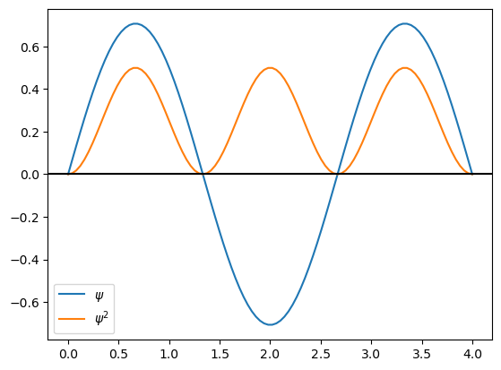
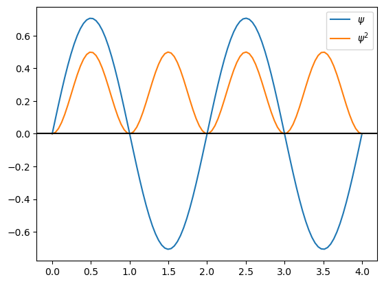

Partícula en la caja
Contenido
5. Partícula en la caja¶
A continuación estudiaremos sistemas sencillos que nos permiten entender como surge la cuantización. Además, nos permitirán familiarizarnos con los pasos para resolver los problemas de química cuántica. Podemos resumir estos como:
Identificar las interacciones y restricciones del sistema.
Escribir el Hamiltoniano (\(\mathcal{H}\)) y la ecuación de Schrödinger (\(\mathcal{H}\psi = E \psi\)).
Encontrar la función de onda (\(\psi\)).
Estudiar las condiciones de cuantización.
5.1. Caja 1D¶
La versión 1D de este sistema consiste en una partícula que se mueve en el espacio con un potencial definido en tres regiones

es decir
Esto significa que la partícula está confinada a un intervalo en \(x \epsilon [0,L]\).
La función de onda se puede dividir por regiones. Es imposible que la partícula se encuentre en la región \(\text{I}\) y en la región \(\text{III}\), ya que el potencial es infinito, por lo tanto:
Para encontrar la función de onda en la región \(\text{II}\) hay que escribir la de Schrödinger
cuya solución es
posteriormente hay que recurrir a las condiciones a la frontera.
Inserto matemático: Condiciones a la frontera
La función de onda debe ser continua, esto significa que la región I y la región II deben unirse en el mismo punto, es decir, \(\psi_{I}(0) = \psi_{II}(0) = 0\). Esto implica que \(A=0\), ya que
Por la continuidad con la región III también se cumple \(\psi_{II}(L) = \psi_{III}(L) = 0\), es decir
Ya obtuvimos que \(A\) vale cero, sin embargo, \(B\) no puede ser cero porque \(\psi_{II}\) se anularía. La única forma de que se cumpla la condición a la frontera expresada en la ecuación anterior es que \(kL\) sea un múltiplo de \(\pi\), es decir \(kL = n \pi\), o lo que es lo mismo
Note que en este punto, \(k\), y por tanto la energía, ya no pueden tomar cualquier valor, ¡se han cuantizado!.
Hemos obtenido que
Para encontrar el valor de B hay que normalizar la función de onda, resultando que:
Finalmente, la energía toma la forma
Importe las siguientes librerías
numpy
pyplot de matplotlib
#librerias
import numpy as np
from matplotlib import pyplot as plt
Considere un electrón dentro de una caja de longitud 4 Angstroms. Defina las siguientes constantes
hbar = 1
m = 1
L = 4
# Constantes
hbar = 1
m = 1
L = 4
Grafique la función de onda (\(\psi\)) y su cuadrado (\(\psi^2\)) para n=1 y L=4.0 A
Tip
Declare la variable n asígnele su valor.
Cree el dominio de x de 0 a L con numpy.linspace, utilice una cantidad de puntos, por ejemplo 100.
Evalúe la función de onda en el dominio
Calcule el cuadrado de la función de onda en el dominio
Grafique la función de onda y su cuadrado usando matplotlib y pyplot.
# Inserte código para gráfica
# Gráfica de psi_1 y su cuadrado
n=1
x=np.linspace(0,L,100)
psi=np.sqrt(2.0/L)*np.sin(n*np.pi*x/L)
psi2=psi*psi
plt.plot(x,psi,label="psi")
plt.plot(x,psi2,label="psi^2")
plt.legend()
plt.axhline(y=0, color='k')
plt.show()

Grafique la función de onda (\(\psi\)) y su cuadrado (\(\psi^2\)) para n=1,2,3,4 para L=4.0 A
Tip
Cree el dominio de x de 0 a L con numpy.linspace, utilice una cantidad de puntos, por ejemplo 100.
Evalúe las 4 funciones de onda en el dominio
Calcule el cuadrado de las 4 funciones de onda en el dominio
Grafique las funciones y su cuadrado usando matplotlib y pyplot.
# Inserte código para gráfica
# Gráfica de psi_1, psi_2, psi_3, psi_4 y su cuadrado
x=np.linspace(0,L,100)
n=1
psi=np.sqrt(2.0/L)*np.sin(n*np.pi*x/L)
psi2=psi*psi
plt.plot(x,psi,label="psi")
plt.plot(x,psi2,label="psi^2")
plt.legend()
plt.axhline(y=0, color='k')
plt.show()
n=2
psi=np.sqrt(2.0/L)*np.sin(n*np.pi*x/L)
psi2=psi*psi
plt.plot(x,psi,label="psi")
plt.plot(x,psi2,label="psi^2")
plt.legend()
plt.axhline(y=0, color='k')
plt.show()
n=3
psi=np.sqrt(2.0/L)*np.sin(n*np.pi*x/L)
psi2=psi*psi
plt.plot(x,psi,label="psi")
plt.plot(x,psi2,label="psi^2")
plt.legend()
plt.axhline(y=0, color='k')
plt.show()
n=4
psi=np.sqrt(2.0/L)*np.sin(n*np.pi*x/L)
psi2=psi*psi
plt.plot(x,psi,label="psi")
plt.plot(x,psi2,label="psi^2")
plt.legend()
plt.axhline(y=0, color='k')
plt.show()
 





Pregunta
Encuentre un patrón entre el número cuántico \(n\), el número de nodos de la función de onda, y el número de máximos del cuadrado de la función de onda
Como estamos haciendo una secuencia de gráficas donde aumentamos n de uno en uno, podemos hacerlo con un ciclo for. Repita la gráfica de la función de onda con \(n=1,2,3,4\) utilizando un ciclo for.
# Inserte código para 4 gráficas en las que solo cambia el valor de n, use un for
# Gráfica de psi_1, psi_2, psi_3, psi_4 y su cuadrado con for
x=np.linspace(0,L,100)
for n in range(1,5):
psi=np.sqrt(2.0/L)*np.sin(n*np.pi*x/L)
psi2=psi*psi
plt.plot(x,psi,label="psi")
plt.plot(x,psi2,label="$psi^2$")
plt.legend()
plt.axhline(y=0, color='k')
plt.show()


Haga la gráfica de E en función de n para los primeros 5 niveles energéticos de un electrón en una caja.
Tip
Con \(n=1,2,3,...\)
Utilice la instrucción
plt.hlines(valor,inicio,fin)
Para trazar líneas horizontales desde inicio hasta fin del eje X en valor del eje Y.
Alternativamente, también puede graficar \(n\) vs \(E/\frac{\hbar^2 \pi^2}{2mL^2}\)
# Inserte código para gráfica
L = 1
for n in range(1,6):
plt.hlines(hbar**2*np.pi**2*n**2/(2*m*L**2),0,1)
plt.xlim(0,4)
plt.show()

L = 1
for n in range(1,6):
plt.hlines(n**2,0,1)
plt.xlim(0,4)
plt.show()

Pregunta
¿Qué causó la cuantización de la energía de la partícula en la caja?
Muestre que \(\psi_1\) y \(\psi_3\) son ortonormales (Tome \(L=2.0\)).
Tip
Haga las integrales
# Integral
import numpy as np
from scipy import integrate
L=2.0
psi_1psi_1 = integrate.quad(lambda x: np.sqrt(2.0/L)*np.sin(np.pi*1.0*x/L)*np.sqrt(2.0/L)*np.sin(np.pi*1.0*x/L),0,L)[0]
psi_3psi_3 = integrate.quad(lambda x: np.sqrt(2.0/L)*np.sin(np.pi*3.0*x/L)*np.sqrt(2.0/L)*np.sin(np.pi*3.0*x/L),0,L)[0]
psi_1psi_3 = integrate.quad(lambda x: np.sqrt(2.0/L)*np.sin(np.pi*1.0*x/L)*np.sqrt(2.0/L)*np.sin(np.pi*3.0*x/L),0,L)[0]
print("Integrales")
print("psi_1psi_1",psi_1psi_1)
print("psi_3psi_3",psi_3psi_3)
print("psi_1psi_3",psi_1psi_3)
Integrales
psi_1psi_1 1.0
psi_3psi_3 1.0000000000000002
psi_1psi_3 4.163336342344337e-17
5.2. Caja 2D¶
El problema se puede plantear como una partícula en una caja de 2-Dimensiones. En este caso, la partícula se confina en \(x\varepsilon[0,L_x]\) y \(y\varepsilon[0,L_y]\).
{kind=link}
La ecuación de Schrödinger a resolver es
Que se resuelve por el método de separación de variables y se obtiene:
A continuación realizará una serie de pasos que le permitirán generar la gráfica de \(\psi_{1,1}\), es decir \(n_x=1\) y \(n_y=1\), y de \(|\psi_{1,1}|^2\) con \(L_x = L_y = 4.0\)
Para hacer gráficas 3D, declararemos el siguiente código
ax = plt.axes(projection='3d')
# Ejes 3D
ax = plt.axes(projection='3d')

Declare los valores de Lx=4, Ly=4, nx=1 y ny=1
#valores
Lx=4.0
Ly=4.0
nx=1.0
ny=1.0
Es muy frecuente que las gráficas de superficies requieran de un mallado.
Tip
Genere un mallado con las siguientes instrucciones
1 Declare un dominio para sus ejes, en este caso \(x\in[0,L_x]\) y \(y\in[0,L_y]\)
x = np.linspace(0, Lx, 30x = np.linspace(0, Lx, 30)
y = np.linspace(0, Ly, 30)
2 Genere el mallado con la instrucción meshgrid
X, Y = np.meshgrid(x, y)
# Mallado
x = np.linspace(0, Lx, 30)
y = np.linspace(0, Ly, 30)
X, Y = np.meshgrid(x, y)
Genere la gráfica de \(\psi_{1,1}\), es decir \(n_x=1\) y \(n_y=1\), y de \(|\psi_{1,1}|^2\) con \(L_x = L_y = 4.0\).
Tip
Use el siguiente código. Note el uso de plt.axes para crear un eje 3D, y de ax.plot_surface
psi = np.sqrt(2.0/Lx)*np.sqrt(2.0/Ly)*np.sin(nx*np.pi*X/Lx)*np.sin(ny*np.pi*Y/Ly)
ax = plt.axes(projection='3d')
ax.plot_surface(X, Y, psi, rstride=1, cstride=1,
cmap='YlGnBu', edgecolor='none')
ax.set_title("$\Psi$")
plt.show()
psi = np.sqrt(2.0/Lx)*np.sqrt(2.0/Ly)*np.sin(nx*np.pi*X/Lx)*np.sin(ny*np.pi*Y/Ly)
ax = plt.axes(projection='3d')
ax.plot_surface(X, Y, psi**2.0, rstride=1, cstride=1,
cmap='YlGnBu', edgecolor='none')
ax.set_title("$|\Psi|^2$")
plt.show()
# Inserte código para gráfica
psi = np.sqrt(2.0/Lx)*np.sqrt(2.0/Ly)*np.sin(nx*np.pi*X/Lx)*np.sin(ny*np.pi*Y/Ly)
ax = plt.axes(projection='3d')
ax.plot_surface(X, Y, psi, rstride=1, cstride=1,
cmap='YlGnBu', edgecolor='none')
ax.set_title("$\Psi$")
plt.show()
psi = np.sqrt(2.0/Lx)*np.sqrt(2.0/Ly)*np.sin(nx*np.pi*X/Lx)*np.sin(ny*np.pi*Y/Ly)
ax = plt.axes(projection='3d')
ax.plot_surface(X, Y, psi**2.0, rstride=1, cstride=1,
cmap='YlGnBu', edgecolor='none')
ax.set_title("$|\Psi|^2$")
plt.show()


Obtenga la gráfica de \(\psi_{3,3}\) y \(|\psi_{3,3}|^2\) con \(L_x = L_y = 4.0\)
Tip
Declare los valores de \(L_x\), \(L_y\), \(n_x\) y \(n_y\).
Genere el mallado
Genere la gráfica de \(\psi\) y \(\psi^2\).
# Inserte código para gráfica
Lx=4.0
Ly=4.0
nx=3.0
ny=3.0
x = np.linspace(0, Lx, 70)
y = np.linspace(0, Ly, 70)
X, Y = np.meshgrid(x, y)
psi = np.sqrt(2.0/Lx)*np.sqrt(2.0/Ly)*np.sin(nx*np.pi*X/Lx)*np.sin(ny*np.pi*Y/Ly)
ax = plt.axes(projection='3d')
ax.plot_surface(X, Y, psi, rstride=1, cstride=1,
cmap='YlGnBu', edgecolor='none')
ax.set_title("$\Psi$")
plt.show()
psi = np.sqrt(2.0/Lx)*np.sqrt(2.0/Ly)*np.sin(nx*np.pi*X/Lx)*np.sin(ny*np.pi*Y/Ly)
ax = plt.axes(projection='3d')
ax.plot_surface(X, Y, psi**2.0, rstride=1, cstride=1,
cmap='YlGnBu', edgecolor='none')
ax.set_title("$|\Psi|^2$")
plt.show()


5.3. Referencias¶
(1) Pilar, F. L. Elementary Quantum Chemistry, Dover ed.; Dover Publications: Mineola, N.Y, 2001.
(2) Breneman, G. L. The Two-Dimensional Particle in a Box. Journal of Chemical Education 1990, 67 (10), 866.